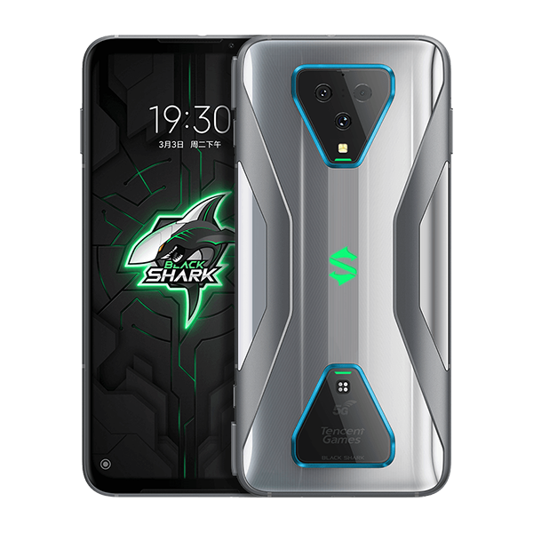
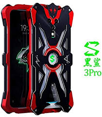
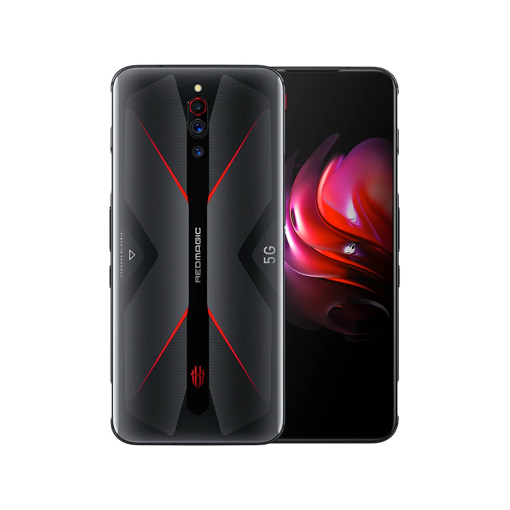
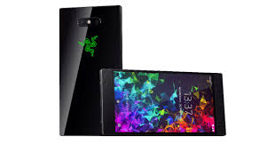

MEJORES CELULARES GAMER
| NOMBRE | DESCRIPCIÓN | IMAGEN |
|---|
| Xiaomi Black Shark 3 |
Contiene: AMOLED 6,67” resolución 2.400×1.080p 90 Hz,Snapdragon 8658 GB DDR 4 X, cámara Trasera: 64 + 13 + 5 MP, Android 10Q, Batería 4.720 mAh |
 |
| Xiaomi Black Shark 3 Pro |
Contiene: AMOLED 7,1” resolución 3.120×1.440p 90 Hz, Snapdragon 865, 8 GB DDR5, Cámara trasera: 64 + 13 + 5 MP, Android 10Q, almacenamiento de 256 GB. |
 |
| nubia red magic 5g |
Contiene: AMOLED 6,65” resolución 2.340×1.080p 144 Hz,Snapdragon 865, 8/12 GB DDR5, Cámara Trasera: 64 + 8 + 2 MP Frontal: 8 MP , almacenamiento de 128/256 GB, Android 10Q |
 |
| Razer Phone II |
Contiene:IZGO 5,7” resolución QHD 120Hz, Snapdragon 855, 8 GB, Cámara trasera: 12 + 12 MP Frontal: 8 MP, Android 8.0 Oreo, almacenamiento de 64 gb. |
 |